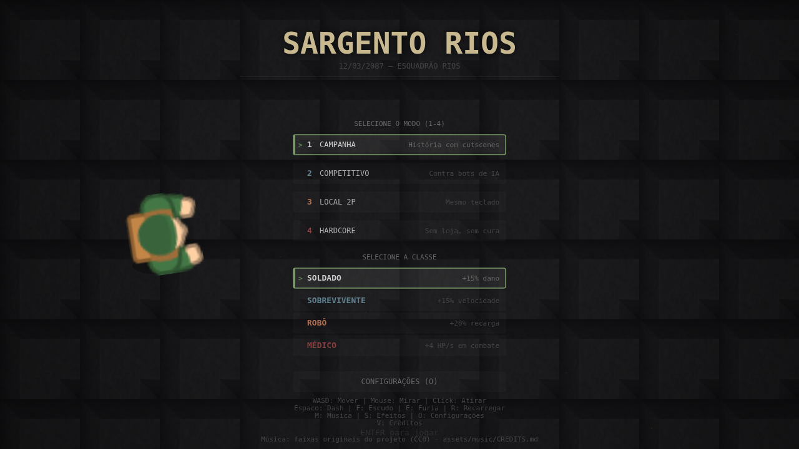
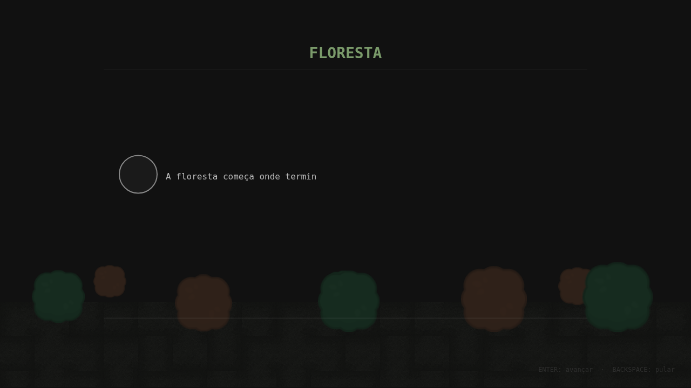
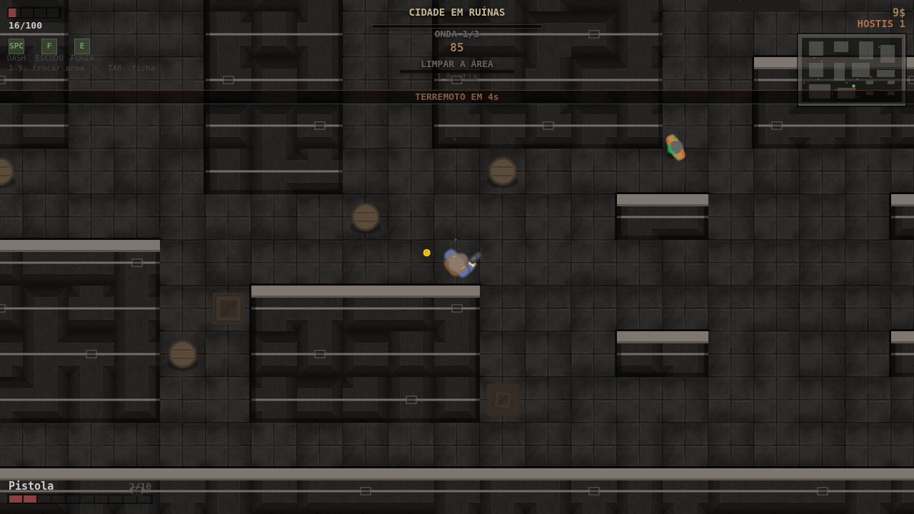
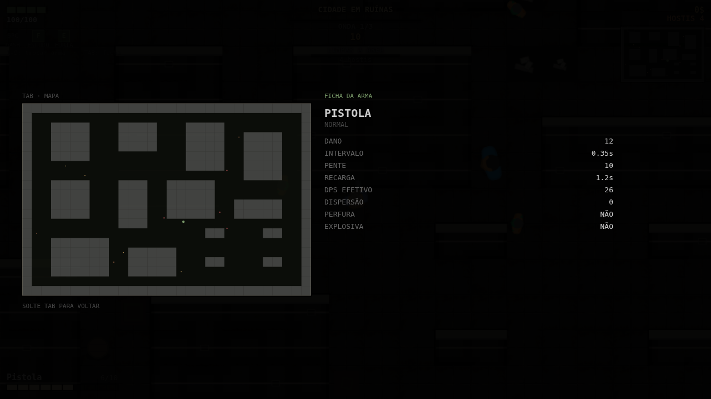

sobrevivência · tiro de cima · roguelite
SARGENTO RIOS
Nove fases de um mundo que já acabou. Cada fase tem ondas, um objetivo e um
chefe que não espera você ficar pronto. Você morre, volta ao menu, compra melhor e repete —
e o diário anota o que aconteceu do seu jeito.

Menu — o fundo é o terreno do jogo, não arte de vitrine. 
Uma das nove cutscenes. O cenário é montado com os mesmos tiles do jogo. 
Cidade em Ruínas, onda 1/3. A moeda no chão é sprite, não círculo. 
Ficha da arma no TAB: campo e build na mesma tela.
Como jogar
WASD andar
mouse mira
clique atirar (segurar)
ESPAÇO dash
E / F escudo / fúria
1–9 trocar arma
TAB ficha da arma
ESC pausa
O que tem
Quatro modos: campanha, competitivo com bots,
local para dois no mesmo teclado e hardcore (sem loja, sem pausa).
As nove fases
objetivo e chefe saem do config — se a fase mudar, isto muda junto
Doze armas
arma classe dano s entre tiros pente o que ela faz
Feito com ajuda de IA — o código, o texto e a
direção passaram por mão humana; a página do jogo traz o mesmo aviso. Se achou um problema,
o lugar é a página do jogo.
Arte: Kenney (Top-down Shooter, Particle Pack, Platformer Art Deluxe) e Screaming Brain Studios
(Top Down Dungeon Pack), CC0. Armas: Kay Lousberg, CC0. Sons: Kenney e OpenGameArt (CC0),
com quatro tiros de Vincent Sevedge em CC-BY 3.0. Música: Eric Matyas (soundimage.org),
livre com atribuição. Detalhe em public/assets/CREDITS.md.